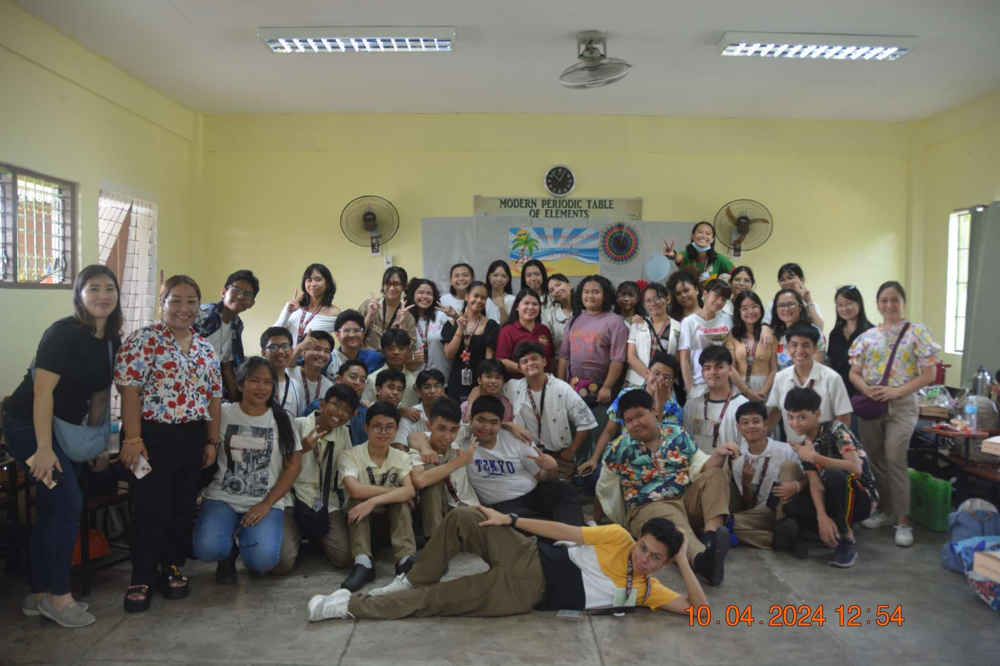
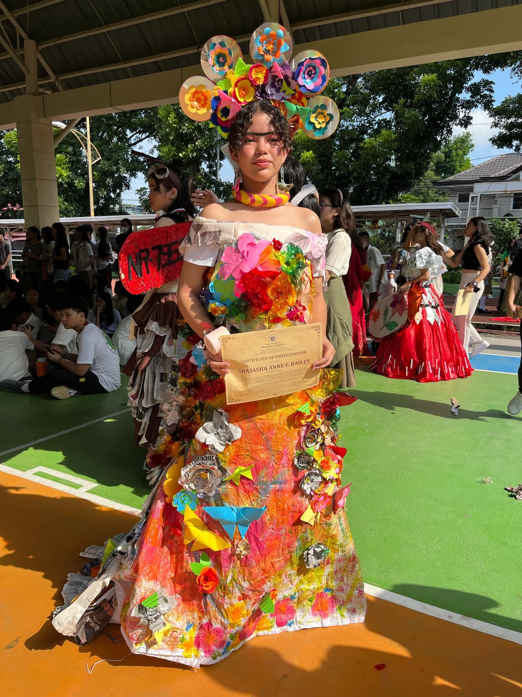
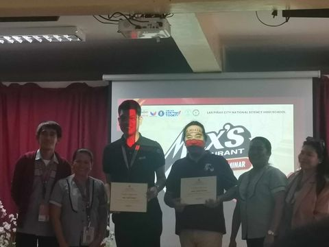
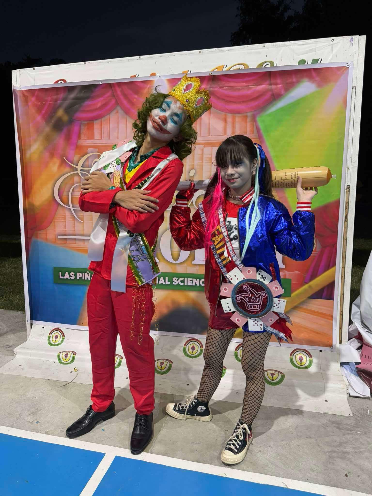
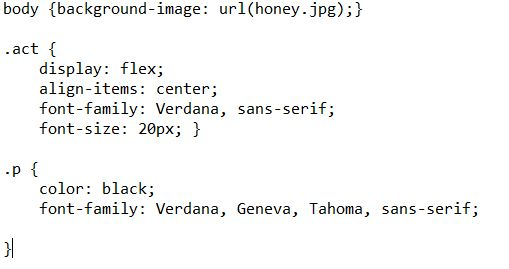
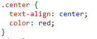
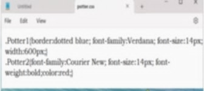
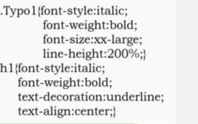
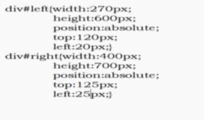

I'm Charles Geo I. Catas or you can call me "Pogi". Im currently 14 yrs. old I love playing games, music, volleyball and her (joke lang po miss🥰).I love staying active and discovering new ways to enjoy life! I'm always up for a challenge and love pushing myself to learn new things. Im very curious kaya maingay po ako lagi and I love animals po (im a big cat person miss). Overall im just a chill guy and I hope you'll enjoy my portfolio po!❤❤❤
Activities:
a. This picture was taken on teachers' day everybody was happy after the day goes by full of joy and excitement.

b. This is a picture of Tasha as Frida Kahlo for the AP Month contest kami po gumawa ng paper flowers miss🔥

c. Nakasama sa Max Seminar about Food Safety salamat sa libreng pastil miss apaka sherep. TYSM po!!!

d. This is a picture of Chase and Bliss po for the Booklandia contest sa English month I helped in the sash thingy po.

e. Vpop practice namin to miss im the one who made the lyrics🔥
Outputs:
LESSON 1&2
This lesson was all about CSS basics and fundamentals.
EXAMPLE:

LESSON 3
We learned in this week how to use selectors in CSS.
EXAMPLE:

LESSON 4&5
I learned how to organize infos in your website using div, span and class.
EXAMPLE:

LESSON 6
In this week we learned on how to format and design text using CSS basics.
EXAMPLE:

LESSON 7
In this week I learned how to format layouts for a better looking and good placement of infos you can put.
EXAMPLE:

Reflection
As a student, I learned many things about CSS and how it makes websites look better. I now know how to style pages with colors, fonts, and layouts to make them more attractive. This knowledge will help me create better websites in the future.